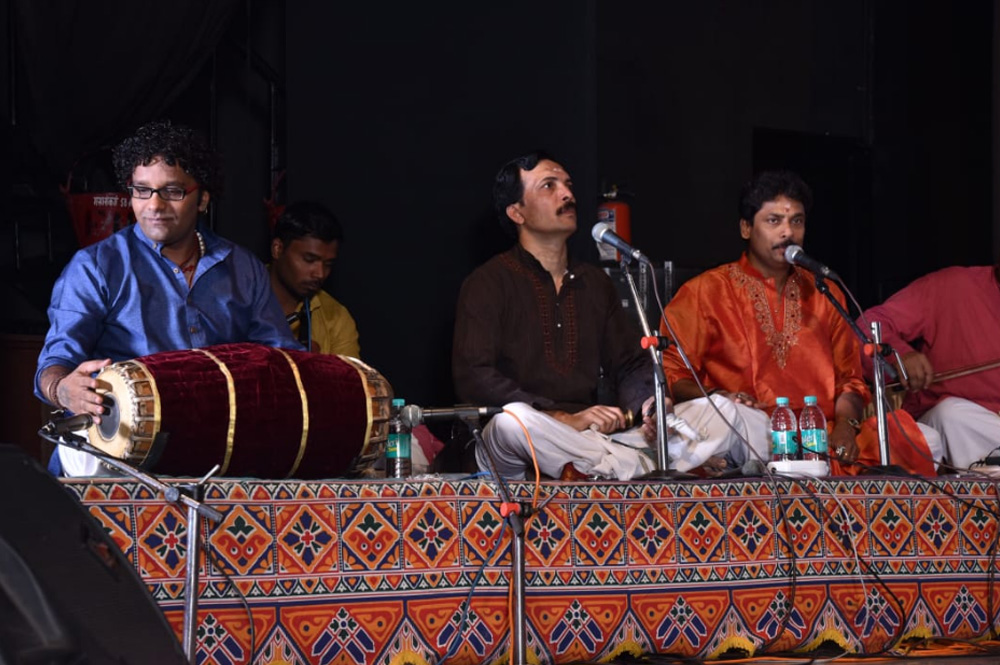

01Sa
Beginners
Foundations of Carnatic vocal, sruti and laya, basic swaras and simple compositions, at a gentle, encouraging pace.
Foundation
Learn
Personal Carnatic and light-music training, shaped around your level, your voice and your pace.
A direct way to learn
Carnatic and light-music classes taught online, so students in India and around the world can learn directly, without needing to be in the room. From the first swara to a full concert repertoire.
What you can learn
Choose the starting point that matches your present experience. The learning path develops with your voice.
Foundations of Carnatic vocal, sruti and laya, basic swaras and simple compositions, at a gentle, encouraging pace.
FoundationVarnams, kritis, raga understanding and voice culture, building the confidence to perform.
DevelopmentAdvanced repertoire, manodharma, and coaching for singers preparing for concerts, arangetrams and examinations.
MasteryHow online classes work
Share your level, goals and preferred timing. We reply with the right track for you.
A first online session to understand your voice and set a learning plan.
Regular one-to-one online classes, at your pace, from wherever you are in the world.

For organisations
Customised Music Therapy sessions for corporates, MNCs and government organisations, designed for people in high-stress roles. Classical sound used to release stress and restore mental and physical well-being, delivered on request for teams.

Your first lesson starts here
Enrol for online classes or ask about a workshop. Tell us your level and timing and we will take it from there.
Enrol or enquire